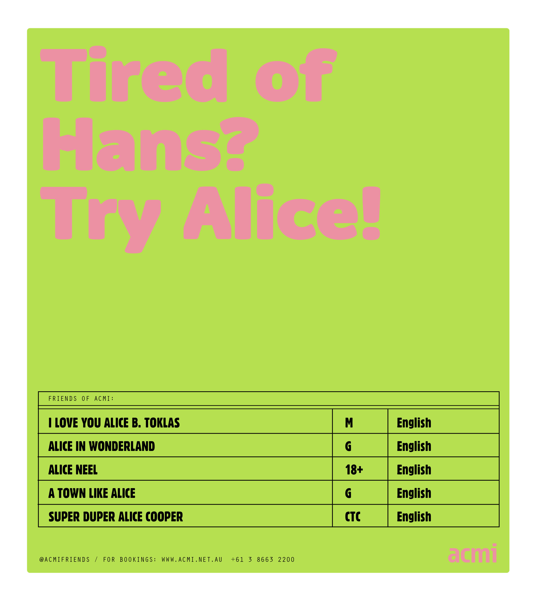
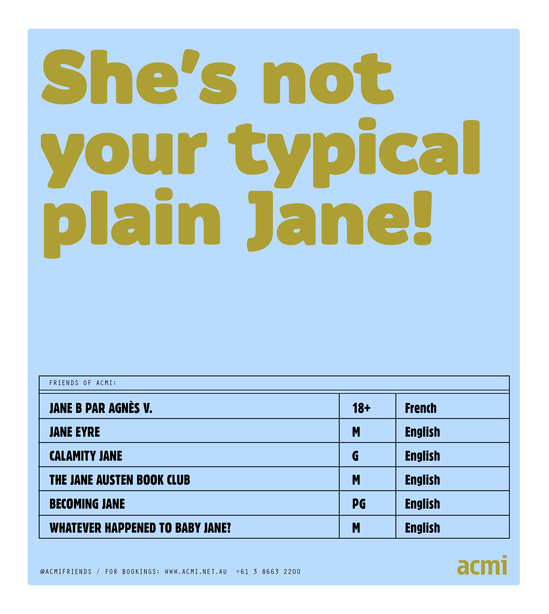

Film is about people, lives and relations. And simply, this became my entry point into ACMI's dataset of 15 years of screened films. Manually filtering the datasets' movie titles, I collected all first-names of living persons, human characters, animals and animated characters.
The names carry the narrative in a range of poster-titles, as a medium to reflect back on and showcase the dataset; the vast array of genres, themes, people and lives shown at ACMIs cinemas. The tone is straight and the colours are bright and vigorous, just like the dataset, and the dynamic spirit of ACMI.
 